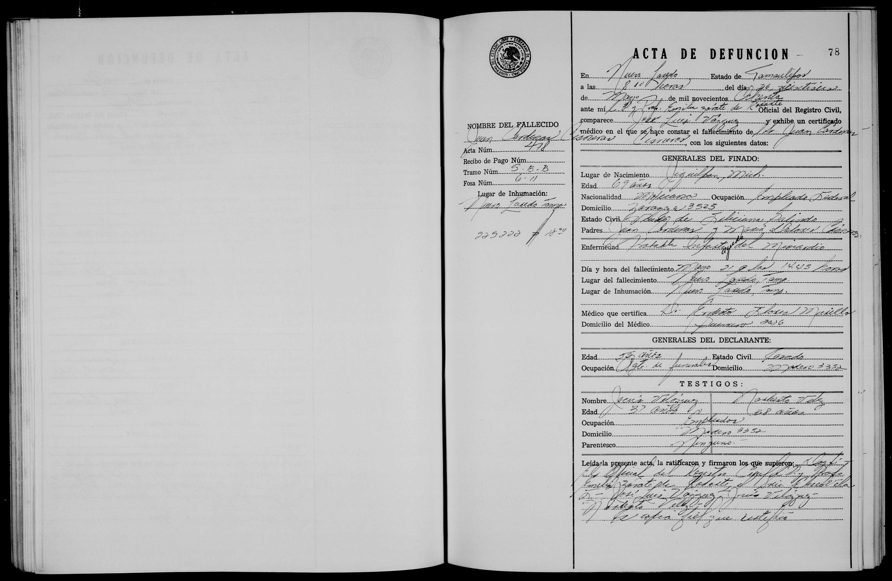

Juan Cárdenas Cisneros

| Tipo | Acta de defunción |
| Fecha | 26 de mayo de 1980 |
| Lugar | Nuevo Laredo |
| Acta | Acta 478 |
| Difunto | Juan Cardenas Cisneras, 69 años |
| Padres | Juan Cardenas / Maria Dolores Cisneras |
| Esposa | Feliciana Galindo |
Transcripción pendiente de verificación: los datos provienen del índice del registro; el manuscrito no ha sido releído línea por línea. Todo texto manuscrito no verificado se marca «ilegible/duda».